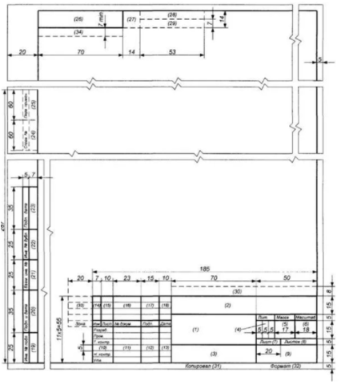

Основные надписи
Порядок выполнения основной надписи и дополнительных граф
Содержание, расположение и размеры граф основной надписи, дополнительных граф к ней, а также размеры рамок на чертежах и схемах должны соответствовать форме 1

Основная надпись, дополнительные графы к ней и рамки выполняют сплошными основными и сплошными тонкими линиями по ГОСТ 2.303.
Основную надпись располагают в правом нижнем углу конструкторских документов. На листах формата А4 по ГОСТ 2.301 основную надпись располагают вдоль короткой стороны листа.
Таблица изменений в основной надписи при необходимости может продолжаться вверх или влево от основной надписи (при наличии графы 33 - влево от нее). При расположении таблицы изменений слева от основной надписи наименования граф 14-18 повторяют.
В графах основной надписи и дополнительных графах (номера граф на формах показаны в круглых скобках) указывают значения соответствующих реквизитов или атрибутов согласно таблице 1:
- в графе 1 - наименование изделия и наименование документа, если этому документу присвоен код. Для изделий народнохозяйственного назначения допускается не указывать наименование документа, если его код определен ГОСТ 2.102, ГОСТ 2.601, ГОСТ 2.602,ГОСТ 2.701. Наименование изделия должно соответствовать принятой терминологии и быть по возможности кратким. Наименование изделия записывают в именительном падеже единственного числа. В наименовании, состоящем из нескольких слов, на первом месте помещают имя существительное, например: «Колесо зубчатое». В наименование изделия не включают, как правило, сведения о назначении изделия и его местоположении;
- в графе 2 - обозначение документа по ГОСТ 2.201 и код, если его код определен ГОСТ 2.102, ГОСТ 2.601, ГОСТ 2.602, ГОСТ 2.701. Допускается применять ранее принятую систему обозначений документов;
- в графе 3 - обозначение материала детали (графу заполняют только на чертежах деталей);
- в графе 4 - литеру, присвоенную данному документу (на документе в бумажной форме графу заполняют последовательно, начиная с крайней левой клетки). Допускается в рабочей конструкторской документации литеру проставлять только в спецификациях и технических условиях. Для изделий, разрабатываемых по заказу Министерства обороны, перечень конструкторских документов, на которых должна обязательно проставляться литера, согласуется с заказчиком (представительством заказчика);
- в графе 5 - массу изделия по ГОСТ 2.109;
- в графе 6 - масштаб (проставляется в соответствии с ГОСТ 2.302 и ГОСТ 2.109);
- в графе 7 - порядковый номер листа (на документах, состоящих из одного листа, графу не заполняют);
- в графе 8 - общее количество листов документа (указывают только на первом листе);
- в графе 9 - наименование или код организации, выпускающей документ (графу не заполняют, если код содержится в обозначении документа);
- в графе 10 - характер работы, выполняемой лицом, подписывающим документ, в соответствии с формами 1 и 2. Свободную строку заполняют по усмотрению разработчика, например: «Начальник отдела», «Начальник лаборатории», «Рассчитал». Допустимые значения атрибута устанавливает организация;
- в графе 11 - фамилии лиц, подписавших документ;
- в графе 12 - подписи лиц, фамилии которых указаны в графе 11. Подписи лиц, разработавших данный документ и ответственных за нормоконтроль, являются обязательными. При отсутствии титульного листа допускается подпись лица, утвердившего документ, размещать на свободном поле первого или заглавного листа документа в порядке, установленном для титульных листов по ГОСТ 2.105;
- в графе 13 - дату подписания документа;
- в графах 14 -18 - сведения об изменениях, которые заполняют в соответствии с требованиями ГОСТ 2.503;
- в графе 19 - инвентарный номер подлинника по ГОСТ 2.501;
- в графе 20 - сведения о приемке подлинника в службу технической документации (подпись и дата приемки);
- в графе 21 - инвентарный номер подлинника, взамен которого выпущен данный подлинник по ГОСТ 2.503;
- в графе 22 - инвентарный номер дубликата по ГОСТ 2.502;
- в графе 23 - сведения о приемке дубликата в службу технической документации (подпись и дата приемки);
- в графе 24 - обозначение документа, взамен или на основании которого выпущен данный документ;
- в графе 25 - обозначение соответствующего документа, в котором впервые записан данный документ. Обязательный реквизит для всех документов, заимствованных из документации других изделий;
- в графе 26 - обозначение документа, повернутое на 180° для формата А4 и для форматов больше А4 при расположении основной надписи вдоль длинной стороны листа и на 90° для форматов больше А4 при расположении основной надписи вдоль короткой стороны листа;
- в графе 27 - знак, установленный заказчиком в соответствии с требованиями нормативной документации и проставляемый заказчиком или представительством заказчика;
- в графе 28 - номер решения и год утверждения документации соответствующей литеры. Год утверждения указывают четырьмя цифрами;
- в графе 29 - номер решения и год утверждения документации. Год утверждения указывают четырьмя цифрами;
- в графе 30 - индекс заказчика в соответствии с нормативной документацией;
- в графе 31 - подпись лица, копировавшего документ. При копировании электронного документа обязательный реквизит;
- в графе 32 - обозначение формата листа по ГОСТ 2.301. Для электронного документа указывают формат листа, на котором будет соответствовать указанный в графе 6 масштаб;
- в графе 33 - обозначение зоны, в которой находится изменяемая часть изделия;
- в графе 34-номера авторских свидетельств на изобретения, использованные в данном изделии;
- в графе 35 - номер версии документа в электронной форме, с которого на устройствах вывода ЭВМ получен документ в бумажной форме. Графу заполняют только для документов, изготавливаемых с применением ЭВМ;
- в графе 36 - единица измерения (метрическая или дюймовая);
- в графе 37 - метод проецирования. Способ расположения проекций детали на чертеже. Обязательный, если проецирование не соответствует ГОСТ 2.305;
- в графе 38 - имя файла, содержащего документ в электронной форме. Графу заполняют только для документов, изготавливаемых с помощью ЭВМ;
- в графе 39 - признак аутентичного документа (обязательный для аутентичных документов);
- в графе 40 - код документа в зависимости от характера использования.
- в графе 41 - Обозначение документа аналогичного изделия, для которого ранее изготовлены средства технологического оснащения, необходимые для данного изделия. Для документов, выполняемых только на бумажном носителе, допускается использовать графу 24.